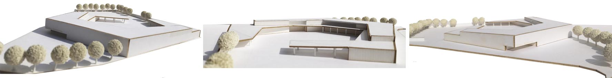
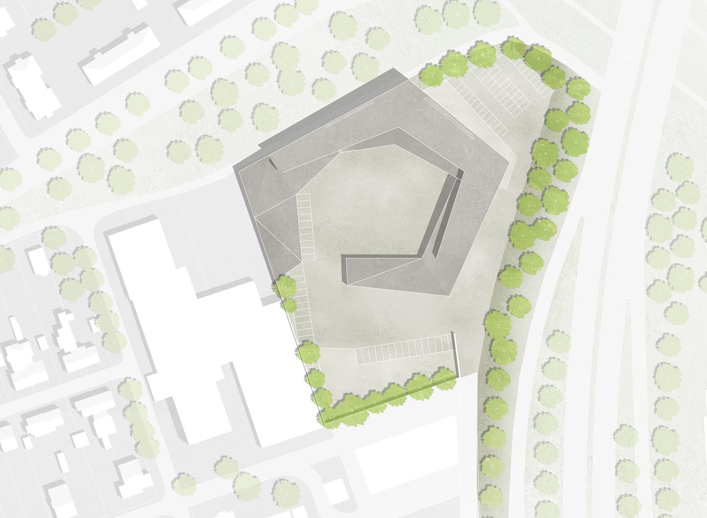
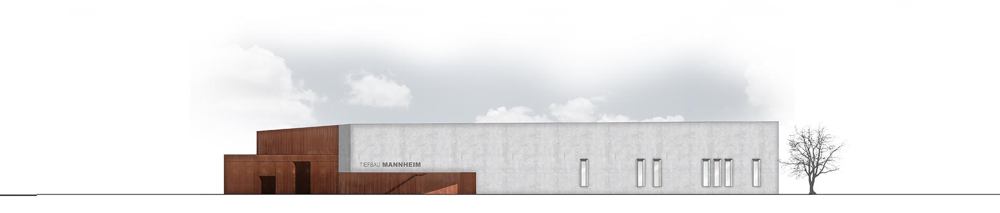
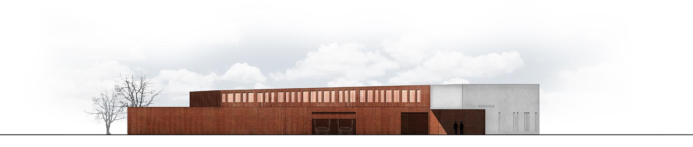
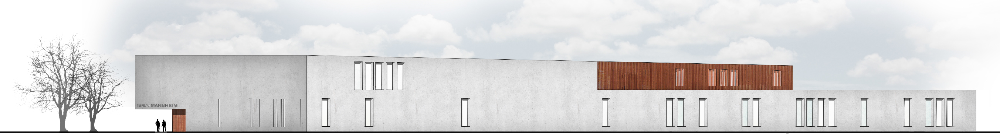
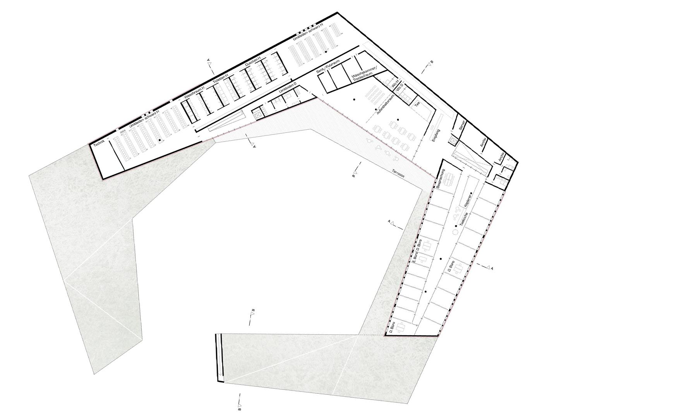
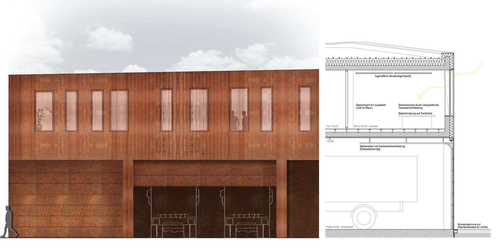
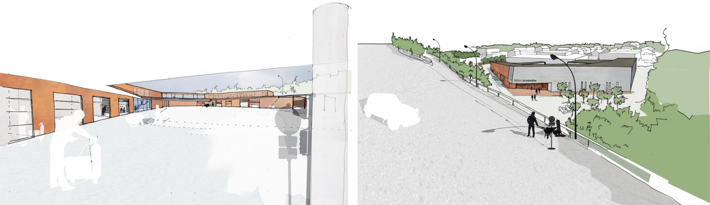
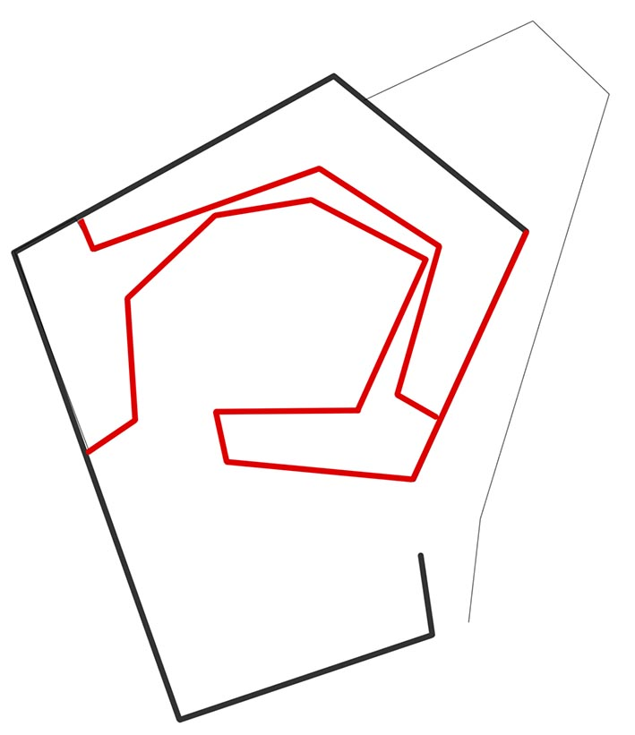

-

Modell

Lageplan

Hauptfassade
Ansicht südost

Ansicht nordwest

Zugangsstockwerk

OG 1

Fassadedetail

Innenperspektive / Aussenperspektive
Im Rücken eines Gewerbegebiets, zwischen zwei Verkehrsrampen, die Zufahrt verwinkelt und die eigentliche Sichtseite zum Gleisvorfeld des Güterbahnhofs – die Lage des neuen Betriebshofs des FB Tiefbau der Stadt Mannheim gibt seiner Funktion alle Ehre. Und entgegen aller Mannheimer Quadrate-Logik formen die Grenzen des Baufelds eine komplementäre Vorgabe zur streng formalen Aufgabe.
Dennoch: Die Abläufe – vor allem die Fahrzeugbewegungen – erfordern eine großzügige Lösung für einen reibungslosen Ablauf des Betriebs. Wir schlagen deshalb einen spiralartigen Baukörper vor, dessen Glieder nach betrieblichen Gesichtspunkten belegt werden:
LKW nutzen die durchfahrbare Halle, von der aus sie in einfachen Bögen alle Ladepunkte erreichen, um dann weiter zu ihrem Einsatzort zu fahren. Am Ende ihres Einsatzes folgen sie der gleichen Bewegung, um ohne Gegenverkehr wiederum alle Punkte anzufahren, bis sie geparkt werden.
Lagerräume und –flächen werden entlang der Bewegung angelegt.
Klare Trennung der Schwarz- und Weißbereiche (diese sind flächenoptimiert – Nachweis der Funktionalität siehe Planung) durch eigene Erschließung, inkl. s/w-getrenntem Aufzug, wenn erforderlich.
Werkstätten bilden den Gegenschwerpunkt der Spirale.
Eine Fahrzeugwäsche kann bei Bedarf arrondiert werden.
Weißbereiche wie die Verwaltung, Kantine und Umkleiden werden im Obergeschoss angeordnet, sie erreichen dadurch eine gewisse Höhe zur Unterstützung der Aufenthaltsqualität.
Verkehr mit Privatfahrzeugen wird entlang dem Gebäude in die Nordostecke des Grundstücks geleitet, wo der Baukörper sein prägnantestes Gesicht zeigt – mit dem Haupteingang für Personal und Besucher. Diese Seite kann von der B38a aus gut eingesehen werden, sie wird damit bildprägend für den Betriebshof sein.
Betrieblicher Verkehr bewegt sich im Wesentlichen im Hof der Anlage, getrennt vom Besucherverkehr und den Schall bergend.
Für die Fassaden des Bauwerks schlagen wir ein Materialkonzept vor, das den bestimmenden Materialien des Tiefbaus entlehnt ist: Beton und Stahl. Sichtbeton formt als Sandwichkonstruktion den Rücken des Gebäudes, während vorgeblendete Cortenstähle als geschlossene Platten, großmaschiges Streckmetall und gelochte Trapezbleche je nach Nutzungsanforderung die poröseren Wände kennzeichnen. Dadurch wird ein homogener Gesamteindruck gefördert, der sowohl in der Fernwirkung (B38a!) emblematisch wirkt, wie auch in der nahen Ansicht zu angemessenen und sensiblen Reaktionen in der Lage ist.
STATISCH-KONSTRUKTIVES KONZEPT
Die vorgesehenen Bewegungsräume erzeugen teils große Spannweiten. Gleichzeitig werden für die Nutzung große lichte Höhen benötigt, sodass Unterzüge unnötig weiteres Volumen erzeugen würden. Eine überschlägige statische Berechnung weist Stahlbeton-Flachdecken (ca. 30cm) mit nur wenigen erforderlichen Unterzügen nach (siehe Eintragungen). Teils wären in Abhängigkeit des Brandschutzkonzeptes auch Verbunddecken möglich. Schublasten werden über Wandscheiben abgeleitet.
Beton-Außenwände schlagen wir als Sandwichaufbau mit inneren Filigranplatten und äußerem Sichtbeton in Dreischichtplatten-Schalung vor.
ENERGIE UND HAUSTECHNIK
Zur Optimierung des Energiebedarfs und begünstigt durch die großen Anteile mit Räumen niedrigerer Dauertemperatur konzipieren wir ein Bauwerk, das mit niedrigen Vorlauftemperaturen temperiert wird. Dadurch ergibt sich die Möglichkeit der Nutzung von Luft- oder Erdwärmetauschern, ergänzt durch Spitzenlastabdeckung aus dem Rücklauf der Fernwärme. Der hohe Anteil an bauteilaktivierten Speichermassen begünstigt den Energiebedarf sowohl im Winter als auch im kurpfälzisch dämpfigen Sommer. Nachtauskühlung über natürliche Querlüftung mittels automatisierter Fensterflügel. Verschattung durch die Wahl der Fassade: im Sommer bei steilem Sonnenstand verschattet – im Winter stärkerer Energieeintrag.
Eine mechanische Lüftung ist für die ausgedehnten Bereiche der Nassräume vorgesehen. Die Zentrale kann im Zwischengeschoss über der Stiefelwäsche logisch platziert werden. Weitere Lüftungszonen ergeben sich in der weiteren Planung für die Werkstätten und Fahrzeughallen – je nach Nutzung. Deren Geräte können wiederum sinnvoll über den dienenden Räumen angeordnet werden, bzw. in der Fahrzeughalle als unmittelbare Bedarfslüftung. Zur Erschließung des Zwischengeschosse in den Werkstätten ist zur Außenwand hin ein angehobener Gang denkbar, der auch kleine Meisterbüros bedienen könnte.